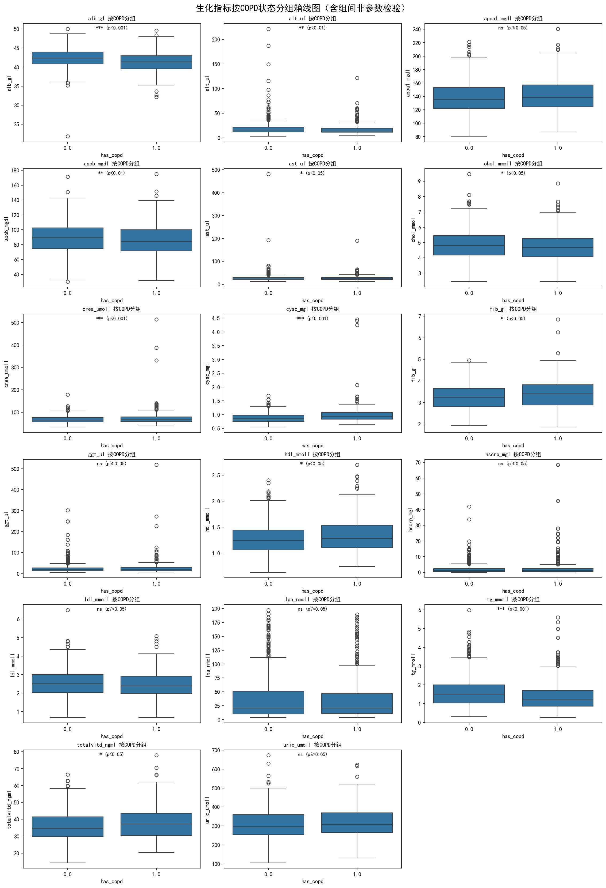
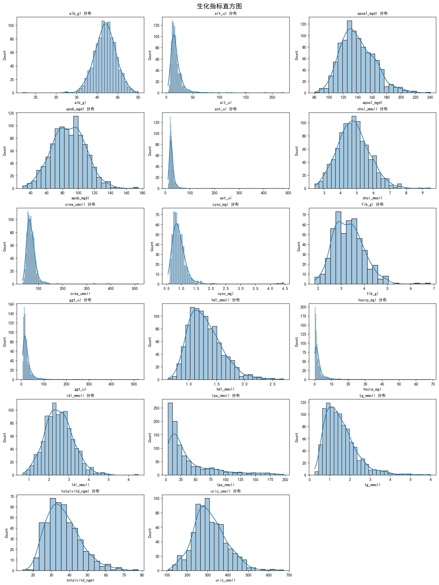
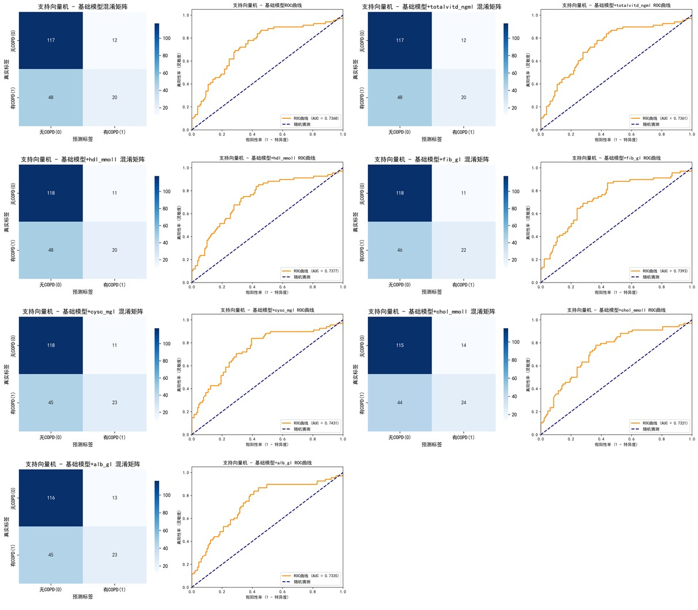

分析结论：多个生化指标在COPD组和非COPD组之间存在显著差异（p<0.05），这些指标可以作为COPD预测的潜在特征。
本项目整合生化指标与问卷数据，通过机器学习模型预测COPD发生风险，为早期干预提供依据。慢性阻塞性肺疾病（COPD）是一种常见的慢性呼吸系统疾病，早期诊断和干预对于改善患者预后至关重要。
# 定义核心生化指标列表
bio_indicators = [
'alb_gl', 'alt_ul', 'apoa1_mgdl', 'apob_mgdl', 'ast_ul', 'chol_mmoll',
'crea_umoll', 'cysc_mgl', 'fib_gl', 'ggt_ul', 'hdl_mmoll', 'hscrp_mgl',
'ldl_mmoll', 'lpa_nmoll', 'tg_mmoll', 'totalvitd_ngml', 'uric_umoll'
]
# 质量控制：保留合格样品
qc_indicators = ['haemolysed', 'turbid', 'lipaemic', 'icteric']
biosamples_qc = biosamples_clean[(biosamples_clean[qc_indicators] == 0).all(axis=1)].copy()
# 数据合并
data_merged = pd.merge(
left=biosamples_qc,
right=questionnaires_df,
on='studyid',
how='inner'
)
# 生成年龄变量
data_model['Age'] = data_model['age_at_study_date_x100'] / 100
# 性别变量
data_model['Sex'] = data_model['is_female'].map({0: 'Male', 1: 'Female'})
# 吸烟状态
data_model['Current_Smoker'] = np.where(
data_model['smoking_category'].isin([1, 2, 3]), 'No',
np.where(data_model['smoking_category'] == 4, 'Yes', np.nan)
)
# 定义三种算法模型
models_dict = {
'逻辑回归': LogisticRegression(random_state=42, max_iter=1000, solver='lbfgs'),
'随机森林': RandomForestClassifier(random_state=42, n_estimators=100, max_depth=10),
'支持向量机': SVC(random_state=42, kernel='linear', probability=True, cache_size=1000)
}
# 训练基础模型
model_base, acc_base, rec_base, auc_base, y_prob_base, y_pred_base, y_prob_base_train = train_evaluate_model(
base_model, X_train_raw, X_test_raw, y_train, y_test, current_vars_base
)

分析结论：生化指标呈现不同的分布特征，部分指标存在明显的偏态分布，需要进行适当的转换或使用非参数统计方法。
分析结论：多个生化指标在COPD组和非COPD组之间存在显著差异（p<0.05），这些指标可以作为COPD预测的潜在特征。
| 算法 | 基础模型AUC | 最佳单指标模型AUC | 最佳NRI |
|---|---|---|---|
| 逻辑回归 | 0.7356 | 0.7429 | 0.0302 |
| 随机森林 | 0.6813 | 0.7008 | 0.1208 |
| 支持向量机 | 0.7368 | 0.7431 | 0.0093 |
分析结论：支持向量机模型在所有评估指标中表现最佳，AUC达到0.7431，显示出较好的COPD预测能力。
逻辑回归预测模型性能：逻辑回归基础模型综合性能最优。
随机森林预测模型性能：随机森林模型综合性能最差。

SVM预测模型性能：SVM 的基础模型增加胱抑素 C 整合模型为最优 COPD 预测模型。
本项目成功构建了基于生化指标和问卷数据的COPD预测模型。支持向量机模型表现最佳，AUC达到0.7431。模型可以为COPD的早期诊断和干预提供有价值的参考。